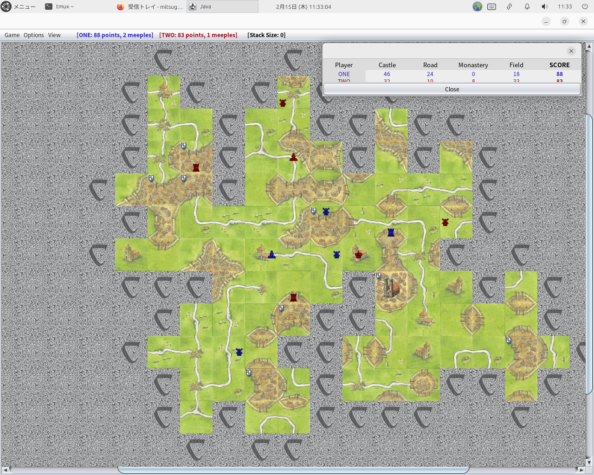

カルカソンヌの Java 実装を公開している人がいるので Ubuntu MATE 上で動くようにあれこれしていて、対 AI (CPU) で連戦連敗だったのですが、最近になってようやくある程度は勝てるようになってきました。
公式の Carcassonne のアプリもそうなのですが、総じてどのプラットフォームのどのアプリも、まるで競技のようにプレイヤーの地形とミープルを殺しにきます。AI 側がこのように作られている以上、AI に勝利しようとすると、こちらも AI 側の地形とミープルを殺しに行って AI 側の得点を防ぐほかありません。まるで競技のような AI とのガチンコ勝負になります。
ある意味カルカソンヌの競技志向の人には勉強や練習になるともいえるのですが、空いた時間にカルカソンヌをちょこっと楽しみたいというエンジョイ勢には AI がムカつくような手しか打ってこないので「金を払って買ったのにぜんぜん楽しくない！！」ってことになり、Google Play Store のレビューなどで見ることができるような酷評が、そこら中のレビューに並ぶことになります。
カルカソンヌの PC 版、スマホ版をのんびりと楽しみたい場合は、公式アプリであれば人間とリモート対戦が可能なので、同じエンジョイ勢の人間とプレイ開始時間を約束してプレイすることをお勧めします。
あるいはボードゲームアリーナで人とリモート対戦するのもいいかもしれません。ネックはプレミアム会員にならないとテーブルを開くことができないことでしょうか。
現在リリースされているどのアプリでも AI は必ず勝ちに来ます。こちらもゲームに負けないように頑張ると、上のプレイ結果画像を見ればわかるように、道路は寸断され、都市は未完成のまま放棄され荒れた国土だけが残ります。
カルカソンヌの場合、勝負になると泥仕合になって国土が荒廃するのは仕方がないのかもしれません。同じように目の殺し合いがある囲碁とは、その点が異なるような気がしています。
争うな！！戦うな！！ってことをカルカソンヌというゲームは教えているのかもしれません……なんてね。
なお Java 実装版は "java -jre Carcassonne-v1.8.1.jar" で動きます。Java 製なので OS も問わず実行も楽ですね。タイルが第 1 版の古いデザインなので、第 2 版や現行の第 3 版のタイルデザインが好きな人は不満を持つかもしれませんけど。
【2024.02.16 追記】
Java 実装版のカルカソンヌですが、開発者の説明にあるようにタイル構成とルールが本家ベースゲームと若干異なるので、もしカルカソンヌの競技の練習目的でプレイしたいなら、本家の公式アプリを使うことをお勧めします (拡張やボックス製品では廃版になっているウィンター・エディションも追加購入できます)。
Java 実装版には、現行のカルカソンヌ第 3 版 (日本ではカルカソンヌ 21 という名称で販売されている) には含まれない、カルカソンヌ拡張に含まれるタイルが追加されており、点数計算も若干カルカソンヌベーシックルールと若干異なります。